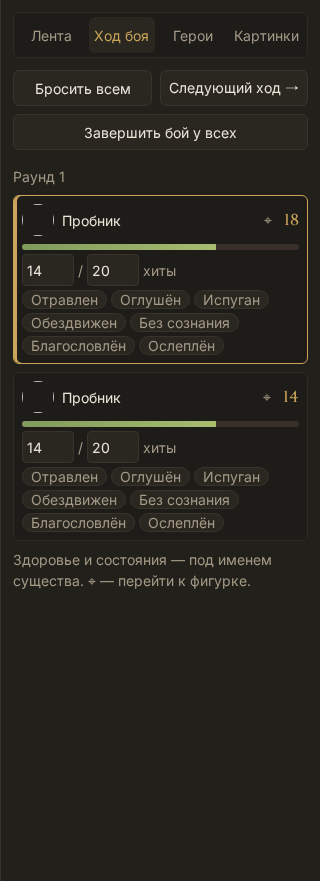
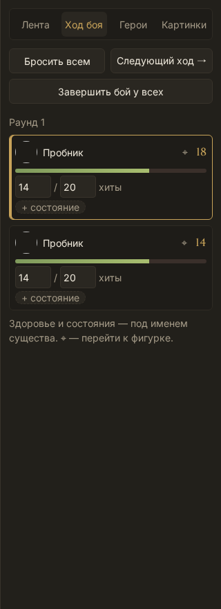
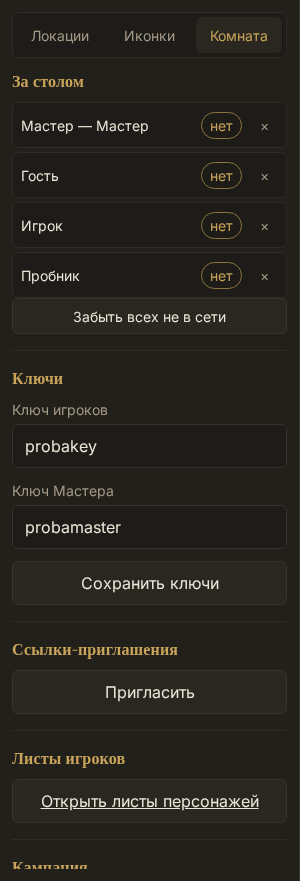
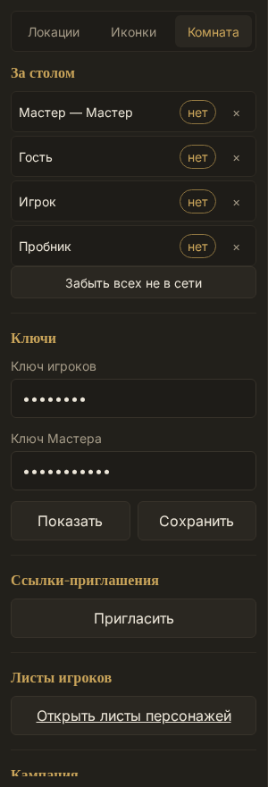
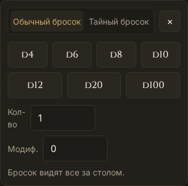
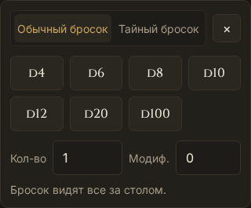

Правки внешнего вида
Слева — как было, справа — как стало. Всё уже на сайте: посмотри и скажи, что оставляем, а что вернуть обратно. Разобранные правки отсюда убираются.
← За стол16 сентября 2026 — третья партия, ждёт решения
10. Ход боя: состояния не занимают всю строку
Было: под каждым бойцом висели все семь состояний сразу — «Отравлен, Оглушён, Испуган, Обездвижен, Без сознания, Благословлён, Ослеплён». Три ряда одинаковых слов на каждого, и наложенное состояние терялось среди неналоженных. Двое в бою занимали весь экран.
Стало: висят только наложенные состояния, остальные ждут под пунктирной кнопкой «+ состояние». Строка бойца ужалась почти вдвое, и видно сразу, кто отравлен. Снять состояние — щелчок по нему, как и раньше.


11. Иконки: две колонки вместо трёх
Было: плитки по 85 пикселей в три колонки, имя под плиткой не влезало никогда — «Крыса бо…», «Пробник …». Чтобы понять, кто это, надо было наводить мышь.
Стало: две колонки, плитка крупнее, имя помещается целиком. Картинку существа видно лучше, а список стал длиннее — его и так листают.


12. Ключи комнаты закрыты точками
Было: ключ игроков и ключ Мастера лежали в панели открытым текстом. За спиной может стоять кто угодно, а на стриме экран видят все сразу — при этом ключ персонажа в кабинете давно спрятан за точки.
Стало: оба ключа показаны точками, рядом «Показать» — нажал, посмотрел, нажал ещё раз и спрятал. Кнопка сохранения стала просто «Сохранить», обе встали в ряд.


13. Кубики: подписи в строку, кости ровной сеткой
Было: подпись «Кол-во» ломалась надвое и распирала строку, а кости лежали свободным рядом и разъезжались по ширине: D4–D10 узкие, D12–D100 широкие.
Стало: семь костей стоят в сетке по четыре в ряд, одинаковой ширины. «Кол-во» и «Модиф.» держатся в одну строку и делят место поровну.

